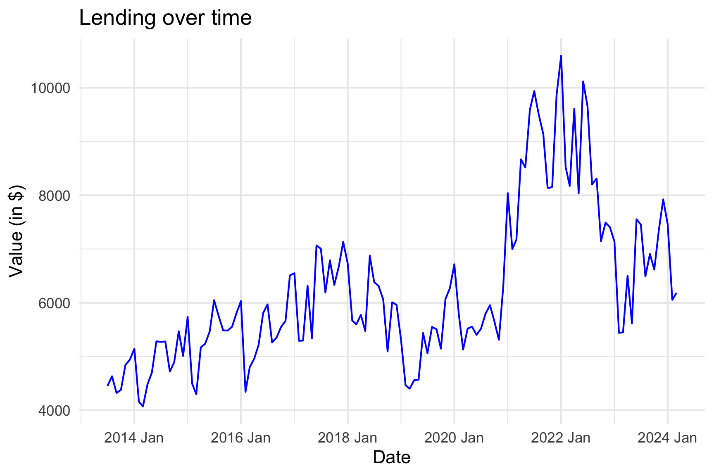

Forecast Reconciliation
Land Transfer Duty
Author: Hoang Do
Hierarchical Time Series
Cross-sectional hierarchy
Structure
Each level of aggregation exhibit distinct characteristics.
\(\text{y}_t = y_{res,t} + y_{non-res,t}\) and \(y_{non-res,t} = y_{ind,t} + y_{comm,t} + y_{other,t}\)
Notation
Can be written in matrix form:
\[ \begin{bmatrix} \text{Total}_{t} \\ \text{Non-residential}_{t} \\ \text{Residential}_{t} \\ \text{Commercial}_{t} \\ \text{Industrial}_{t} \\ \text{Other}_{t} \\ \end{bmatrix} = \begin{bmatrix} 1 & 1 & 1 & 1 \\ 0 & 1 & 1 & 1 \\ 1 & 0 & 0 & 0 \\ 0 & 1 & 0 & 0 \\ 0 & 0 & 1 & 0 \\ 0 & 0 & 0 & 1 \\ \end{bmatrix} \begin{bmatrix} \text{Residential}_{t} \\ \text{Commercial}_{t} \\ \text{Industrial}_{t} \\ \text{Other}_{t} \\ \end{bmatrix} \] or in a more compact notation:
\[ \textbf{y}_{t} = \textbf{S}\textbf{b}_{t} \]
Temporal hierarchy
Sructure
A time series can be disaggregated by non-overlapping temporal frequencies.
Forecasts can be generated at bi-monthly, quarterly, four-monthly, semi-annually, and annually frequencies.
Monthly value as the bottom level.
Cross-sectional + Temporal = Cross-Temporal

Vector Error Correction Model
What is Vector Error Correction Model (VECM)
VECM: A model that captures both short-term dynamics and long-term equilibrium relationships in non-stationary, cointegrated time series data.
Key Components
- Cointegration: Long-term equilibrium relationship among variables.
- Error Correction Term: Speed of adjustment towards equilibrium.
- Short-term Dynamics: Immediate responses to changes.
Steps to Construct a VECM
Check for Stationarity: Use unit root tests (ADF).
Test for Cointegration: Perform Johansen test using the trace test statistic to find cointegrating relationships.
Specify the VECM: Choose lag length and cointegrating rank.
Estimate the VECM: Use maximum likelihood estimation.
Diagnostic Checks: Validate model with tests for autocorrelation, heteroscedasticity, and normality.
Land Transfer Duty
Non-stationary time series
Why non-stationary?
Lending and home value index have trends.
Sales has a seasonal pattern.


Choosing the right variable
Procedure
Step 1: Fit a VECM to land transfer duty and other variables
Step 2: Form a linear combination using eigenvector components
Step 3: Use Augmented Dickey-Fuller (ADF) test for stationary
Result
Choose the optimal lag
Procedure
Variable Lag Ranges: Different lag ranges for each temporal frequency
Model Fitting: Fit a VECM for each lag value
Optimal Lag Selection: Choose the optimal lag based on the AICc
Benefits
- Adaptive Modeling: Captures unique dynamics and relationships in the data, enhancing forecast accuracy.
- Prevents Overfitting: AICc penalization ensures the model is robust and generalizable.
- Responsive to Changes: Adjusts to market dynamics and structural shifts, maintaining forecast accuracy under evolving economic conditions.
Forecast ALL levels and nodes
Forecast at different levels don’t add up!
Forecast at different levels don’t add up!
Important
Independently produced forecasts are incoherent,
\(\hat{LTD}_{T+h|T} \neq \hat{Comm}_{T+h|T} + \hat{Ind}_{T+h|T} + \hat{Other}_{T+h|T} + \hat{Residential}_{T+h|T}\).
Or for temporal hierarchy
\(\hat{Year}_{T+h|T} \neq \hat{Jan}_{T+h|T} + \hat{Feb}_{T+h|T} + \hat{Mar}_{T+h|T} + ... + \hat{Dec}_{T+h|T}\).
Reconciliation
What is forecast reconciliation?
Forecast reconciliation is a post-forecasting process that involves transforming a set of incoherent forecasts into coherent forecasts which satisfy a given set of linear constraints for a multivariate time series.
Hyndman et al. (2011)
First obtain a set of base forecast \(\bf{\hat{y}}_{h}\),
Then all coherent forecast can be represented as:
\(\bf{\tilde{y}}_{h} = \bf{SG}\hat{\bf{y}}_{h}\),
where G is a matrix that maps the base forecasts into the bottom level, and the summing matrix S sums these up using the aggregation structure to produce a set of coherent forecasts \(\bf{\tilde{y}}_\text{h}\)
Objective: We need to find the optimal G matrix.
The MinT optimal reconciliation approach
MinT
Wickramasuriya et al. (2019) show that the variance-covariance of the h-step-ahead coherent forecast errors is given by:
where \(\textbf{W}_{h} = Var[\textbf{y}_{T+h} - \bf{\hat{y}}_{h}]\) is the variance-covariance matrix of the corresponding base forecast errors.
The idea is to find a G matrix that minimises the total forecast variance of the coherent forecasts, leading to the MinT (Minimum Trace) optimal reconciliation approach.
MinT
Wickramasuriya et al. (2019) show that:
minimises the trace of \(\textbf{V}_{h}\) subject to S G S = S
Therefore, the optimally reconciled forecasts are given by:
which refers as the MinT
Now we need to estimate \(\textbf{W}_{h}\), which is challenging.
Four simplifying assumptions
\(\bf{OLS}\) (Hyndman et al. (2011)).: \(\mathbf{W}_{h} = \text{k}_{h}\mathbf{I}\) for all h, where \(\text{k}_{h} > 0\).
\(\bf{WLS}_{S}\) (Athanasopoulos et al. (2017)): \(\mathbf{W}_{h} = \text{k}_{h}\mathbf{\Lambda}\) for all h, where \(\text{k}_{h} > 0\), \(\mathbf{\Lambda} = diag(\textbf{S1})\), and \(\bf{1}\) is unit vector of dimension \(\it{m}\) (the number of bottom-level series).
\(\bf{WLS}_{V}\) (Hyndman, Lee & Wang (2016)): \(\mathbf{W}_{h} = \text{k}_{h}\text{diag(}\mathbf{\hat{W}}_{1}\text{)}\) for all h, where \(\text{k}_{h} > 0\),
\[ \mathbf{\hat{W}}_{1} = \frac{1}{T}\sum_{t=1}^{T}\textbf{e}_{t}\textbf{e'}_{t}, \] and \(\textbf{e}_{t}\) is an \(\it{n}\)-dimensional vector of residuals of the models that generated the base forecasts stacked in the same order as the data.
- \(\bf{MinT}_{S}\) Wickramasuriya, Athanasopoulos & Hyndman (2018).: \(\mathbf{W}_{h} = \text{k}_{h}\mathbf{\hat{W}^{*}}_{1, D}\) for all h, where \(\text{k}_{h} > 0\), and \(\mathbf{\hat{W}^{*}}_{1, D} = \mathit{\lambda}\mathbf{\hat{W}^{*}}_{1, D} + \text{(1-} \mathit{\lambda})\mathbf{\hat{W}}_{1}\) is a shrinkage estimator with diagonal target \(\mathbf{\hat{W}^{*}}_{1, D}\), a diagonal matrix comprising the diagonal entries of \(\mathbf{\hat{W}}_{1}\), and \(\mathit{\lambda}\) the shrinkage intensity parameter.
Cross-temporal reconciliation
Heuristic first-temporal-then-cross-sectional reconciliation
2-step approach
Kourentzes and Athanasopoulos (2019)
Step 1: Independently generated temporally coherence forecast (THieFs) for each node of the cross-sectional hierarchy
Step 2: From previously THieFs, we generate k cross-sectional reconciliations, setting \(\textbf{W}_{h} = \bf{\hat{W}}_{h,\ell}\), where \(\ell = 1,2,..,k\), and k denotes the number of temporal aggregation levels
This results in reconciliation matrix \(\textbf{SG}_{\ell}\) for each temporal aggregation level,
- Averaging across these, we compose a consesus reconciliation matrix SG , where \(\textbf{G} = \frac{1}{k}\sum_{\ell=1}^{k}\textbf{G}_{\ell}\), capturing the reconciliation consesus across all k temporal aggregation levels –> cross-temporally coherence forecast
FoReco package

R package, Di Fonzo and Girolimetto (2022)
Offers classical (bottom-up and top-down) and modern (optimal and heuristic combination) forecast reconciliation procedures
Allows for cross-sectional, temporal and cross-temporal linearly constrained multiple time series
Results
Comparing forecasts RMSE
- RMSE constructed using time series cross-validation with 10 folds
- VECM base forecast performs much better
- Overall, reconciliation improves forecast accuracy of base forecast
MAPE
Reconciled VECM against DTF
Below the horizontal line means cross-temporally reconciled forecast performs better
Overall, cross-temporal reconciled forecasts perform better
Recap
Summary
Overall, cross-temporally reconciled forecast performs better
Reconciliation helps improving where the forecasts are poor
Accuracy improvement proves it is efficient enough to adopt forecast reconciliation
Limitation: subjectivity and small sample selection bias
References
References
Hyndman, R. J., & Athanasopoulos, G. (2021). Forecasting: Principles and practice. Otexts. https://otexts.com/fpp3/
Athanasopoulos, G., Hyndman, R. J., Kourentzes, N., & Petropoulos, F. (2017). Forecasting with temporal hierarchies. European Journal of Operational Research, 262(1), 60-74. https://doi.org/10.1016/j.ejor.2017.02.046
Wickramasuriya, S. L., Athanasopoulos, G., & Hyndman, R. J. (2018). Optimal forecast reconciliation for hierarchical and grouped time series through trace minimization. Journal of the American Statistical Association, 114(526), 804-819. https://doi.org/10.1080/01621459.2018.1448825
Girolimetto, D., G. Athanasopoulos, T. Di Fonzo, R.J. Hyndman, Cross-temporal probabilistic forecast reconciliation: Methodological and practical issues, International Journal of Forecasting, 2023.https://doi.org/10.1016/j.ijforecast.2023.10.003.
References
References
Kourentzes, N., & Athanasopoulos, G. (2019). Cross-temporal coherent forecasts for Australian tourism. Annals of Tourism Research, 75, 393-409. https://doi.org/10.1016/j.annals.2019.02.001
Malakellis, M., & Warlters, M. (2021). The economic costs of transfer duty: a literature review. NSW Government. https://www.treasury.nsw.gov.au/sites/default/files/2021-06/the_economic_costs_of_transfer_duty_a_literature_review.pdf
Girolimetto, D. & Di Fonzo, T. (2022), FoReco: Point Forecast Reconciliation. https://danigiro.github.io/FoReco/
Thank You

Department of Treasury and Finance